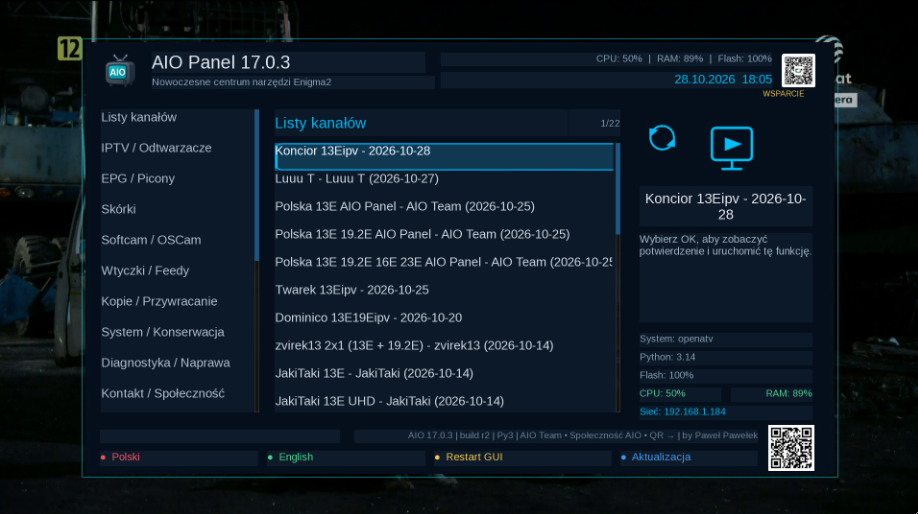

JediMakerXtream 6.37
Tworzenie bukietów IPTV z kont i list Xtream Codes. Instalacja IPK/DEB z repozytorium pakietów, gdy nie ma jej w feedzie obrazu.
AIO TEAM • ENIGMA2 • NOWA AKTUALIZACJA 28.10.2026
AIO Panel 17.0.3 przywraca instalację JediMakerXtream 6.37 i ChocholousekPicons 5.0.240904 na obrazach, w których brakuje tych pakietów w feedzie. Dodano PHub (18+) oraz usprawniono walidację IPK/DEB i kontrolę pamięci FLASH. Enigma2 — Python 2 / Python 3.

17.0.3 • 28.10.2026AIO Panel 17.0.3 — 28 października 2026
JediMakerXtream 6.37 i ChocholousekPicons 5.0.240904 można instalować bezpośrednio poprzez AIO Panel, korzystając z przygotowanych źródeł pakietów IPK/DEB.
Nowość: PHub w oddzielnej kategorii „Dla dorosłych 18+”. Funkcja wyłącznie dla użytkowników pełnoletnich.
Enigma2 • Python 2 / Python 3 • instalatory • aktualizacje
Co nowego?
Tworzenie bukietów IPTV z kont i list Xtream Codes. Instalacja IPK/DEB z repozytorium pakietów, gdy nie ma jej w feedzie obrazu.
Pobieranie i aktualizacja piconów. Alternatywna instalacja przez AIO Panel bez ręcznego wyszukiwania pakietów.
Nowa pozycja „Dla dorosłych 18+”: wyszukiwanie, nowości, popularne materiały, kategorie i oceny, kanały, twórcy oraz playlisty. Interfejs obsługiwany pilotem, także serwisy polskojęzyczne. Tylko 18+.
Usprawniona instalacja z zewnętrznych źródeł oraz walidacja pobieranych plików.
Usprawnienia sprawdzania wolnego miejsca podczas aktualizacji AIO Panel.
Zachowano zgodność z obsługiwanymi obrazami Enigma2 i funkcje poprzednich wersji.
Uwaga 18+: PHub jest przeznaczony wyłącznie dla osób pełnoletnich. Źródła zewnętrznego instalatora PHub nie udało się niezależnie zweryfikować; działanie może zależeć od dostępności usługi i zabezpieczeń tunera.
Changelog
Wydanie z 28 października 2026.
Aktualizacja: otwórz AIO Panel → AIO / Aktualizacje. Po instalacji w razie potrzeby wykonaj restart GUI.
Ważne: PHub przeznaczony jest wyłącznie dla osób 18+. Dostępność zewnętrznego źródła instalacji może się zmieniać.
Wydanie
f75c75e55c81fa65925c656d48c61df26b1bf3ed36bc745ba74f9e91b43f6660
Instalacja
Po instalacji lub aktualizacji wykonaj Restart GUI.
wget -q -O - "https://raw.githubusercontent.com/OliOli2013/PanelAIO-Plugin/main/installer.sh?$(date +%s)" | /bin/shopkg install --force-reinstall /tmp/enigma2-plugin-extensions-panelaio_17.0.3_all.ipkdpkg -i /tmp/enigma2-plugin-extensions-panelaio_17.0.3_all.debPlik DEB przeznaczony dla obrazów Enigma2 obsługujących dpkg. Po instalacji wykonaj Restart GUI.
Powiązane
Jeżeli tuner ma własną listę kanałów, nietypową konfigurację softcam lub dodatkowe skrypty, wykonaj kopię konfiguracji przed instalacją. AIO Panel zawiera mechanizmy ochronne, ale kopia użytkownika nadal jest najlepszym zabezpieczeniem.